조경기사 (2011-03-20 기출문제)
1과목: 조경사
1. 프랑스 베르사유궁원에서 사용된 “파르테르(Parterre)”란 명칭으로 가장 적당한 것은?
- 분수 명칭
- 화단 명칭
- 연못 명칭
- 산책로
(정답률: 84%)

2. 다음 유럽 조경사의 각 시대를 주도권의 관점에서 특징적으로 구분한 것 중 부적합한 것은?
- 15세기－이탈리아 노단건축식 정원
- 16세기－이탈리아 바로크식 정원
- 17세기－프랑스 평면기하학식 정원
- 18세기－독일 구성식 정원
(정답률: 77%)
3. 다음 중 몬탈토(Montalto)의 분수와 쌍둥이 카지노(twincasino)가 있는 곳은?
- 란테장(Villa Lante)
- 메디치장(Villa Medici)
- 에스테장(Villa d'Este)
- 파르네제장(Villa Farnese)
(정답률: 75%)
4. 중국 청조(淸朝)의 원림 중 3산5원에 해당하지않는 것은?
- 만수산 소원(小園)
- 향상 정의원(靜宜園)
- 옥천산 정명원(靜明園)
- 원명원(圓明園)
(정답률: 62%)
5. 고려시대 개성 만월대에 대한 설명으로 틀린것은?
- 김홍도가 그린 기로세련계도의 소재가 되었다.
- 높은 축대를 쌓고 동서축으로 건물을 배치하였다.
- 숙종 때 모란으로 명성이 높았던 사루가 있었다.
- 상춘정에는 곡연(曲宴)을 행하였다는 기록이있다.
(정답률: 59%)
6. 대동사강(大東史綱)에 기씨조선 의양왕은 “후원에 정자를 세워 신하들과 잔치를 베풀었다”는 기록이 있다. 이 정자의 이름은?
- 임류각(臨流閣)
- 구선각(求仙閣)
- 청류각(淸流閣)
- 청연각(淸燕閣)
(정답률: 60%)
7. 일본의 도산(모모야마)시대 다정(茶庭)에서 발달한 일본의 주요 전통정원 요소와 관련 있는 것은?
- 인공모래펄과 석등
- 석등과 수수분(水手盆)
- 수수분(水手盆)과 학돌
- 학동과 석등
(정답률: 82%)
8. 니푸르(Nippur)시는 B.C4500년경에 메소포타미아지역에 건설된 도시로서 점토판에 새겨진 이 도시의 평면도는 세계 최초의 도시계획자료라고 알려져 있다. 이 점토판에서 볼 수 있는 니푸르시의 도시시설이 아닌 것은?
- 운하(Canal)
- 도시공원(City Park)
- 신전(Temple)
- 지구라트(Ziggurat)
(정답률: 70%)
9. 조선시대 별서 가운데 충청지방에 조영된 것은?
- 석파정(김흥근)
- 초간정(권문해)
- 남간정사(송시열)
- 명옥헌(오명중)
(정답률: 58%)
10. 국제조경가연합에 관한 설명 중 옳지 않는 것은?
- 일명 “이플라(IFLA)”라고도 한다.
- 1948년 미국의 뉴욕에서 창립되었다.
- 초대 회장은 제리코아(G.A.Gellicoe)였다.
- 창립 회원국 수는 14개국이었다.
(정답률: 71%)
11. 브리지맨(Bridgeman)에 대한 설명 중 맞지 않는 것은?
- 버킹검의 스토우(stowe)원을 설계하였다.
- 궁원(宮苑)의 관리를 담당하고 있던 사람이다.
- 런던과 와이지의 정원조성방식을 탈피하고자했다.
- 부지를 작게 구획 짓는 수법을 구사하였다.
(정답률: 70%)
12. 일본 실정(무로마치)시대 선종사원인 대덕사 대선원(大仙院) 석정(石庭)의 특징을 가장 잘 설명한 것은?
- 우상적 고산수식 정원
- 원근법의 원리를 살린 대풍경의 묘사
- 평지에 15개 돌을 배치하고 흰모래로 마감한의장기법
- 수학적 비례에 의한 조화와 안정감
(정답률: 45%)
13. 다음 무굴왕조의 이슬람 정원 중 샤－자한 시대의 것이 아닌 것은?
- 차스마－샤히
- 샤리마르－바그
- 타지마할
- 니샤트－바그
(정답률: 57%)
14. 다음 중 누하진입형이 아닌 것은?
- 화엄사 진제루(晋濟樓)
- 용문사 해운루(海雲樓)
- 송광사 종고루(鐘鼓樓)
- 부석사 안양루(安養樓)
(정답률: 49%)
15. 고구려 장수왕 15년(427년)에 평양으로 천도후궁을 축하고 훌륭한 궁원(宮苑)을 조성하였다. 이궁의 명칭은?
- 대성궁(大成宮)
- 안학궁(安鶴宮)
- 동명궁(東明宮)
- 대동궁(大東宮)
(정답률: 82%)
16. 이집트 주택정원의 특징이 아닌 것은?
- 장방형의 화단ㆍJ연못ㆍU울타리 등이 배치되어있다.
- 입구에는 탑문(pylon)이 설치되어 있다.
- 원로에는 관개수로와 정자(arbor)가 있다.
- 수목의 식재로 담을 허물고 장식적 상징적정원을 조성하였다.
(정답률: 80%)
17. 한자로 된 식물명을 한글로 잘못 적은 것은?
- 槐 : 회화나무
- 紫薇 : 장미화
- 大槿 : 무궁화
- 山茶 : 동백
(정답률: 47%)
18. 창덕궁 후원 옥류천 계류가에 존재하지 않는 정자는?
- 취한정
- 태극정
- 소요정
- 농수정
(정답률: 69%)
19. 중국의 전통적인 원림에서는 “나타내려 하여 숨기고(慾顯而隱), 노출하려 하여 감춘다(慾露而藏).”는 수법을 사용하고 있다. 원문(圓門)을 통과했을 때 볼 수 있는 이 수법의 물리적인 요소는?
- 포지(鋪地)
- 영벽(影壁)
- 석순(石筍)
- 회랑(回廊)
(정답률: 75%)
20. 일본 서방사(西芳寺) 정원에 맞지 않는 것은?
- 고산수(故山水)
- 구산팔해석(九山八海石)
- 정토사상(淨土思想)
- 황금지(黃金池)
(정답률: 37%)
2과목: 조경계획
21. 다음 중 용도지역과 그 지정목적의 연결이 옳은것은?
- 보전녹지지역 : 도시의 자연환경ㆍU경관ㆍT산림 및 녹지공간을 보전할 필요가 있는 지역
- 근린상업지역 : 일반적인 상업기능 및 업무기능을 담당하게 하기 위하여 필요한 지역
- 준공업지역 : 환경을 저해하지 아니하는 공업의 배치를 위하여 필요한 지역
- 제1종 전용주거지역 : 저층주택을 중심으로편리한 주거환경을 조성하기 위하여 필요한 지역
(정답률: 40%)
22. 다음 계단에 관한 설명 중 ( )에 적합한 것은?
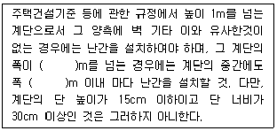
- 2
- 3
- 4
- 5
(정답률: 57%)
23. 공원 녹지의 수요 분석 방법 중 양적 수요 산정방법이 아닌 것은?
- 생태학적 방식
- 심리적 수요에 의한 방식
- 공원 이용율에 의한 방식
- 생활권별 배분 방식
(정답률: 66%)
24. 환경영향평가서를 작성하는 주체는 누구인가?
- 관할 시장ㆍ군수
- 관할 시ㆍ도지사
- 환경부장관
- 사업자
(정답률: 53%)
25. 지질도에서 다음 그림과 같이 나타났을 경우 암석층 A의 경사각 표현으로 가장 적합한 것은?
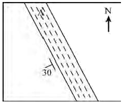
- 수평면으로부터 30° 기울어졌다.
- 수직면으로부터 좌측으로 30° 기울어졌다.
- 지표면으로부터 30° 기울어졌다.
- 정북(北)으로부터 좌측으로 30° 기울어졌다.
(정답률: 62%)
26. 우리나라의 스키장 입지에 가장 좋지 못한 조건은?
- 정상부 급경사. 하부 완경사
- 500∼1700m의 표고
- 남서사면
- 관련시설을 포함하여 최소 10ha 이상
(정답률: 81%)
27. 다음 중 공원 녹지 계획시 고려해야 할 사항에 해당되는 것은?
- 시설 위주의 계획
- 대형 위주의 계획
- 공급 위주의 계획
- 접근성 위주의 계획
(정답률: 75%)
28. 다음 중 도시 및 주거환경정비법에 따라 ( )에 들어갈 내용으로 맞지 않은 것은? (단, 보기의 설명은 모두 등기된 권리라고 가정한다.)
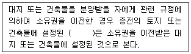
- 지역권
- 저당권
- 전세권
- 지상권
(정답률: 60%)
29. 개발로 인하여 기반시설이 부족할 것으로 예상되나 기반 시설을 설치하기 곤란한 지역을 대상으로 건폐율이나 용적률을 강화하여 적용하기 위하여 지정하는 구역은? (단, 국토의 계획 및 이용에관한 법률을 적용한다.)
- 기반시설부담구역
- 개발밀도관리구역
- 지구단위계획구역
- 용도구역
(정답률: 53%)
30. 다음 설명하는 조경가는?
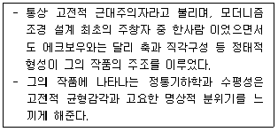
- 로런스 핼프린
- 단 카일리
- 루이스 바라간
- 로베르토 벌막스
(정답률: 58%)
31. 다음 중 완충녹지의 설치 목적으로 볼 수 없는것은?
- 자연환경의 보전
- 공해의 완화
- 재해의 방지
- 사고의 방지
(정답률: 50%)
32. 다음 중 경관분석의 기법에 해당하지 않는 것은?
- 기호화 방법
- 군락측도 방법
- 메시(mesh)에 의한 방법
- 게슈탈트(gestalt)에 의한 방법
(정답률: 68%)
33. 경관분석에 있어서 시각적 효과 분석 방법에 대한 설명 중 옳은 것은?
- 린치(Lynch)는 도시 이미지 형성에 기여하는 물리적 요소로 통로, 모서리, 지역, 결절점 및 랜드마크의 5가지를 제시하였다.
- 틸(Thiel)은 인간 행동의 움직임을 표시하는 모테이션 심볼을 고안하였다.
- 할프린(Halprin)은 개개의 공간 표현보다 부분적 공간의 연결로 형성되는 전체적 공간에 대한 종합적 경험을 더욱 중시하고 있다.
- 아버나티(Abernathy)는 외부공간을 모호한 공간, 한정된 공간, 닫혀진 공간으로 구분하였다.
(정답률: 76%)
34. 관광, 레크레이션 수요추정에 사용되는 시설 가동율에 대한 설명으로 옳지 않은 것은?
- 관광 수요가 가장 극대점에 도달하는 계절에는 100%를 초과하여 수요추정을 한다.
- 시설의 경영상 수지분기점이 되는 지표이다.
- 시설의 연중 평균이용율을 고려하여 설정한다.
- 경영효율은 상한선 보다 하한선 설정이 더 중요하다.
(정답률: 71%)
35. 이용 후 평가(Post Occupancy Evaluation)의 목적을 가장 올바르게 설명하고 있는 것은?
- 몇 개의 프로젝트 가운데서 가장 우수한 작품을 선정하기 위해
- 유사한 다음의 프로젝트에 장단점을 반영시키기 위해
- 평가를 통하여 효율적인 시공 후 관리를 위해
- 환경영향 평가자료로 이용하기 위해
(정답률: 63%)
36. 다음 [보기]의 주차장법 시행규칙상 노외주차장의 설치에 대한 계획기준 설명 중 ( )안에 알맞은 것은?
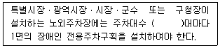
- 15
- 25
- 40
- 50
(정답률: 67%)
37. 아파트 단지내 가로망의 기본 유형별 특징 설명으로 옳은 것은?
- 격자형(格子型) : 통과교통이 상대적으로 적어서 주거 환경의 안전성이 확보된다.
- 우회형(迂廻型) : 토지이용상 효율적이며, 평지에서는 정지작업이 용이한다.
- 대로형(袋路型) : 각 건물에 접근하는데 불편함을 초래할 수 있다.
- 우회전진형(迂廻前進型) : 통과교통이 없어서 주거환경의 안정성이 확보된다.
(정답률: 50%)
38. 조경계획, 생태계획, 환경계획의 과정에서 생태학적 원리와 생태계의 이론을 응용하고, 생태적 관심을 정책결정에 반영할 수 있는 접근방법이 아닌 것은?
- 토지가격의 분석
- 환경영향평가
- 환경의 기능과 서비스의 화폐가치 환산
- 생태계 구성 요소간 상호관계 파악
(정답률: 70%)
39. 고속도로 휴게시설 계획에서 이용자 측면의 입지 선정 조건과 가장 거리가 먼 것은?
- 시설의 식별성
- 인접지의 토지이용 형태
- 유지, 관리의 경제성
- 기상조건
(정답률: 58%)
40. 자동차 속도에 대한 설명 중 설계속도(design speed)에 대한 설명으로 옳은 것은?
- 도로 조건만으로 정한 최고 속도로서 도로의 기하학적 설계 기준이 된다.
- 교통용량이 최대가 되는 속도이며, 이론적으로 교통용량을 생각할 때 적용된다.
- 일정한 구간을 주행한 시간으로 나누어서 구한 속도이다.
- 도로 실시 설계시 기준이 되는 속도로서 도로폭원을 정하는 데 기준이 된다. 제3 조경설계
(정답률: 57%)
3과목: 조경설계
41. “DESIGN WITH NATURE”이라는 저술을 통해 생태학적 접근 방법과 지도중첩기법을 제안하여 전 세계의 조경계 및 도시 계획계에 절대적인 영향을 미친 생태조경가의 작품이 아닌 것은?
- 미국의 리치몬드 파크웨이
- 포토맥 유역 프로젝트
- 캔들스틱 포인트 공원
- 뉴욕 리버데일 공원개발계획
(정답률: 52%)
42. 조경설계기준에 따른 경기장 배치에 관한 설명중 틀린 것은?
- 축구장 : 장축은 가능한 동-서로 주풍향과 직교시킨다.
- 테니스장 : 코드 장축을 정남-북을 기준으로 동서 5∼15° 편차 내의 범위로 하며 가능하면 코트의 장축 방향과 주풍향 방향이 일치하도록 한다.
- 배구장 : 장축을 남북방향으로 배치하며 바람의 영향을 받기 때문에 주풍방향에 수목 등의 방풍시설을 마련한다.
- 농구장 : 농구코트의 방위는 남-북 축을 기준으로 하고, 가까이에 건축물이 있는 경우에는 사이드라인을 건축물과 직각 혹은 평행하게 배치한다.
(정답률: 80%)
43. 다음 디자인의 원리에 관한 설명 중 ( )안에 각각 적합한 요소는?
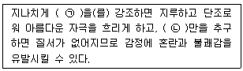
- ㉠ 통일 ㉡ 변화
- ㉠ 대비 ㉡ 조화
- ㉠ 균형 ㉡ 대칭
- ㉠ 집중 ㉡ 리듬
(정답률: 81%)
44. 축(軸)이 강조되는 경관에 대한 설명 중 옳지 않은 것은?
- 축은 어떠한 공간의 심리적 안정감을 줄 수도 있다.
- 축이 존재하는 경관은 장엄, 엄정하나 간혹단조롭다.
- 축은 부축(minor axis)이 되는 요소가 있으므로 더욱 강조된다.
- 축은 좌우대칭의 경우에만 강조될 수 있다.
(정답률: 83%)
45. 조경설계기준상의 야외공연장 설계와 관련된설명으로 옳지 않은 것은?
- 공연시 음압레벨의 영향에 민감한 시설로부터 이격시킨다.
- 객석의 전후영역은 표정이나 세밀한 몸짓을 이상적으로 감상 할 수 있는 생리적한계인 50m 이내로 하는 것을 원칙으로 한다.
- 객석에서의 부각은 15도 이하가 바람직하며 최대 30도까지 허용된다.
- 좌판 좌우간격은 평의자의 경우 40∼45cm이상으로 하며, 등의자의 경우 45∼50cm 이상으로 한다.
(정답률: 57%)
46. 리튼(R.B.Litton)이 분류한 산림경관의 7가지 유형이 아닌 것은?
- 전경관(panoranic landscape)
- 위요경관(enclosed landscape)
- 농촌경관(rural landscape)
- 관개경관(canopied landscape)
(정답률: 76%)
47. 일반적으로 조경설계에서 사용되는 축척에 대한 설명으로 틀린 것은?
- 축척이란 실물 크기가 도면상에 나타날 때의 비율이다.
- 축척은 대지의 규모나 도면의 종류와 따라 달라진다.
- 일반적으로 어린이공원 계획평면도는 세밀한표현이 가능한 1/500∼1/1000 축척을 사용한다.
- 일반적으로 상세도에서는 1/10∼1/50 축척을 사용한다.
(정답률: 67%)
48. KS표준에 의한 A0 용지의 크기에 해당하는 것은?
- 594×841mm
- 841×1,189mm
- 1,189×1,090mm
- 1,090×1,200mm
(정답률: 71%)
49. 포스트모더니즘 조경에 있어서 나타나는 강한 형태적 특징으로 볼 수 없는 것은?
- 기본도형(원, 삼각형, 사각형)
- 포인트그리드(point-grids)
- 임의사선
- 수직선
(정답률: 41%)
50. 도시경관을 분석하는데 환경적 요소를 부호화하고 진행에 따라 변화하는 요소를 평면적ㆍ수직적의 두 측면에서 기록하고, 여기에 시간적 요소를 첨가하는 방법을 시도한 사람은?
- 필립 틸(Phlip Thiel)
- 로렌스 할프린(Lawrence Halprin)
- 케빈 린치(Kevin Lynch)
- 크리스토퍼 알렉산더(Christopher Alexander)
(정답률: 65%)
51. 다음 중 먼셀 색체계의 기본 10색상이 아닌 것은?
- 흰색(W)
- 보라(P)
- 초록(G)
- 주황(YR)
(정답률: 69%)
52. 출입구가 1개인 주차장의 경우 주차형식이 교차주차일 때 차로폭은 몇 m 이상 되어야 하는가? (단, 주차장법 시행규칙의 노외주차장의 구조ㆍ설비기준을 적용한다.)
- 5.0m
- 5.5m
- 6.0m
- 6.4m
(정답률: 44%)
53. 입체물을 경사 또는 회전시켜서 3면을 볼 수 있는 위치에 놓고 수직투상을 한 투상의 종류는?
- 축측투상(axonometric projection)
- 투시투상(perspective projection)
- 복면투상(double-plane projection)
- 표고투상(indexed projection)
(정답률: 61%)
54. 투시도에서 G.P(기면)가 의미하는 것은?
- 사람이 서 있는 면
- 물체와 시점 사이에 기면과 수직한 직립 평면
- 눈의 높이에 수평한 면
- 수평면과 화면의 교차선
(정답률: 63%)
55. 다음 중에서 경사도가 가장 완만한 것은?
- 1：2
- 45%
- 45°
- 1：1
(정답률: 58%)
56. “주택건설기준 등에 관한 규정”에 관한 설명 중( )에 적합한 것은?
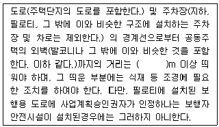
- 1.5
- 2
- 3.5
- 5
(정답률: 56%)
57. 색의 3속성에 관한 설명 중 옳은 것은?
- 색상은 색의 밝고 어두운 정도를 나타낸다.
- 명도는 색을 느끼는 강약이며, 맑기이며, 선명도이다.
- 색상은 물체의 표면에서 반사되는 주파장의종류에 의해 결정된다.
- 같은 회색 종이라도 흰 종이 보다 검은 종이위에 놓았을 때가 더욱 밝아 보이는 것은 채도와 관련된 현상이다.
(정답률: 57%)
58. Meinig는 경관을 해석하는 10가지의 다양한 관점을 제시한 바 있다. 다음 중 경관을 해석하는 관점에 해당되지 않는 것은?
- 체계로서의 경관
- 정서로서의 경관
- 부로서의 경관
- 문제로서의 경관
(정답률: 32%)
59. 조경설계기준에 따른 안내표지 시설 설계시 우선 검토 사항이 아닌 것은?
- 시스템으로서의 구성
- 가독성
- 안정성
- 예술성
(정답률: 73%)
60. 설계과정을 문제해결이라는 측면에서 볼 때 설계안(設計案)을 가장 적절하게 설명하고 있는 것은?
- 설계안은 단하나의 정답만이 존재한다.
- 설계안은 정답(正答)과 오답(誤答)으로 구분할 수 있다.
- 설계안은 더 나은 안(案) 혹은 더 못한 안(案)으로 구분할 수 있다.
- 설계안은 절대평가 및 상대평가가 가능하다.
(정답률: 79%)
4과목: 조경식재
61. 다음 중 측백나무과(科)에 속하지 않는 것은?
- Thuja orientalis for. sieboldii Rehder
- Torreya nucifera Siebold & Zucc
- Juniperus rigida Siebold & Zucc
- Juniperus chinensis var. globosa
(정답률: 43%)
62. 다음 지피식물(地被植物) 가운데 석죽과로 7∼8월에 분홍색 꽃이 피며, 척박토의 양지에 생육한다. 생육가능 지역 및 특성은 노출지이고, 이용형태는 평면인 것은?
- 술패랭이
- 맥문동
- 꽃잔디
- 송악
(정답률: 50%)
63. 식재설계의 미적요소에 관계없는 것은?
- 형태
- 공간
- 질감
- 색채
(정답률: 75%)
64. 다음 중 일반적으로 관목의 식재밀도가 적합하지 않은 것은?
- 산울타리용 관목은 식재간격이 0.25∼0.75m일 때 1.5∼4본/m2이다.
- 지피ㆍM초화류는 식재간격이 0.2∼0.3m일 때 11∼25본/m2이다.
- 크고 성장이 보통인 관목은 식재간격이 1∼1.2m일 때 3본/m2이다.
- 작고 성장이 느린관목은 식재간격이 0.45∼0.6m일 때 3∼5본/m2이다.
(정답률: 51%)
65. 고속도로 사고방지 기능의 식재방법에 속하지 않는 것은?
- 명암순응식재
- 차광식재
- 지표식재
- 완충식재
(정답률: 68%)
66. 페퍼(Pfeffer)에 의하면 수목 생육에 대한 최적 온도는 어느 정도가 적합한가?
- 10∼17℃
- 18∼20℃
- 24∼34℃
- 35∼46℃
(정답률: 67%)
67. 녹색 수피를 갖는 수종만으로 짝지어진 것은?
- Firmiana simplex L, Celtis aurantiaca Nakai
- Aucuba japonica Thunb, Kerria japonica L
- Chaenomeles sinensis Koehne, Lagerstroemiaindica L
- Ulmus parvifolia Jacq, Platanus occidentalis L
(정답률: 27%)
68. 다음 중 표본식재(specimen planting)의 설명으로 옳지 않은 것은?
- 가장 단순한 식재 형식이다.
- 어느 방향에서 보더라도 좋은 모양이어야한다.
- 건축물의 기초 부분 가까운 지면에 식물을식재한다.
- 축선상의 끝에서 종점특질로 이용되기도 한다.
(정답률: 65%)
69. 다음 중 마가목의 학명으로 옳은 것은?
- Prunus verecunda Koidz
- Sorbus commixta Hedl
- Firmiana simplex W.F.Wight
- Weigela subsessilis L.H.Bailey
(정답률: 44%)
70. 다음 나무의 한자어 이름이 잘못된 것은?
- 진달래－두견화(杜鵑花)
- 산딸나무－사조화(四照花)
- 자귀나무－야합수(夜合樹)
- 은행나무－학자수(學者樹)
(정답률: 59%)
71. 다음 수목들 중 7월경에 꽃이 피는 수종은?
- Liriodendron tulipifera L
- Albizia julibrissin Durazz
- Osmanthus fragrans var. aurantiacus Makino
- Lindera obtusiloba Blume
(정답률: 43%)
72. 다음 중 같은 과(科)에 해당되지 않는 것은?
- 개맥문동
- 곰취
- 구절초
- 털머위
(정답률: 47%)
73. 동일한 지표면에서 성격이 다른 두 공간에 프라이버시를 주기 위한 최소한의 수목 높이는?
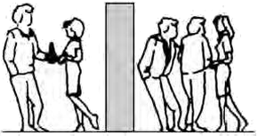
- 120cm
- 150cm
- 180cm
- 210cm
(정답률: 66%)
74. 다음 특징 설명으로 맞는 것은?
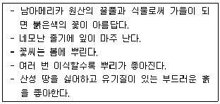
- 맨드라미
- 천일홍
- 샐비어
- 향유
(정답률: 55%)
75. 다음 중 종 풍부도(species richness)에 대한 설명으로 맞는 것은?
- simpson 지수
- shannon-wiener 지수
- 종의 이질성의 척도
- 일정 면적 내의 종수
(정답률: 47%)
76. 다음 중 한 나무에서 수꽃과 암꽃이 각각 피는 수종이 아닌 것은?
- Castanopsis sieboldii Hatus
- Carpinus Iaxiflora Blume
- Quercus acutissima Carruth
- Lindera obrusiloba Blume
(정답률: 37%)
77. 생태연못이나 저습지 조성시 도입되는 수생식물의 분류로 옳은 것은?
- 추수식물－갈대, 줄
- 부엽식물－수련, 생이가래
- 침수식물－검정말, 꽃창포
- 부유식물－개구리밥, 이삭물수세미
(정답률: 55%)
78. 수형은 원추형을 이루고 내음성과 내조성이 강한 상록침엽으로서 큰 나무의 이식은 곤란하나 전정에 잘 견디며 경계식재나 기초식재에 이용하는 수목은?
- Cedrus deodara Loudon
- Magnolia liliflora Desr
- Taxus cuspidata Siebold & Zucc
- Acer palmatum Thunb, ex Murray
(정답률: 54%)
79. 목본식물에 기생하는 외생균근을 형성하는 수목이 아닌 것은?
- Larix kaempferi Carriere
- Acer pictum subsp. mono Ohashi
- Betula platyphylla var. japonica Hara
- Fagus engleriana Seemen ex Diels
(정답률: 43%)
80. 다음 목련류 중 개화시기가 가장 늦은 수종은?
- Magnolia denudata Desr
- Magnolia kobus DC
- Magnolia liliflora Desr
- Magnolia sieboldii K. Koch
(정답률: 53%)
5과목: 조경시공구조학
81. 포틀랜드시멘트 클링커에 철용광로로부터 나온 슬래그와 급랭한 급랭슬래그를 혼합하여 이에 응결시간 조정용 석고를 혼합하여 분쇄한 것으로, 수화열량이 적어 매스콘크리트용으로도 사용할 수 있는 시멘트는?
- 고로시멘트
- 조강시멘트
- 보통포틀랜드시멘트
- 알루미나시멘트
(정답률: 62%)
82. 공사원가에 포함되지 않는 것은?
- 부가가치세
- 직접노무비
- 운반비
- 기계경비
(정답률: 69%)
83. 시멘트의 저장방법 중 적합하지 않은 것은?
- 13포대 이상으로 쌓지 않는다.
- 통풍이 잘 되도록 조치한다.
- 지상에서 30cm 이상 떨어지도록 마루판을 설치한 후 적재한다.
- 입하(入荷) 순서대로 사용한다.
(정답률: 68%)
84. 다음 중 조경재료로 사용되는 금속의 물리적 특성으로 전성(展性, Mallcability)이 제일 작은 것은?
- 니켈
- 철
- 알루미늄
- 구리
(정답률: 63%)
85. 약 80∼120℃의 크레오소트 오일액 중에 3∼6시간 침지한 후 다시 냉액(冷液) 중에 5∼6시간 침지(浸漬) 하여 15mm정도 방수처리를 하는 목재 방부제 처리법은?
- 도포(塗布)법
- 생리적 주입법
- 상압(常壓)주입법
- 가압(加壓)주입법
(정답률: 59%)
86. 다음의 합성수지 중 발포제품으로 만들어 단열재로 사용되는 것은?
- 멜라민수지
- 폴리스틸렌수지
- 염화비닐수지
- 폴리아미드수지
(정답률: 62%)
87. 다음 중 유리의 제성질에 대한 일반적인 설명으로 옳지 않은 것은?
- 열전도율 및 열팽창률이 작다.
- 굴절률은 1.5∼1.9 정도이고 납을 함유하면 낮아진다.
- 약한 산에는 침식되지 않지만 염산ㆍ황산ㆍ질산등에는 서서히 침식된다.
- 광선에 대한 성질은 유리의 성분, 두께, 표면의 평활도 등에 따라 다르다.
(정답률: 55%)
88. 다각형의 전측선 길이가 600m일 때 폐합비를 1/3000로 하기 위해서는 축척 1/500의 도면에서 폐합오차는 어느 정도까지 허용할 수 있는가?
- 0.4mm
- 0.6mm
- 0.8mm
- 1mm
(정답률: 31%)
89. PERT와 CPM 공정표의 차이점으로 옳은 것은?
- CPM은 신규 및 경험이 없는 건설공사에 이용되나 PERT는 경험이 있는 공사에 이용된다.
- CPM은 더미(Dummy)를 사용하나 PERT는 사용하지 않는다.
- CPM은 화살선으로 작업을 표시하나 PERT는 원으로 작업을 표시한다.
- CPM은 소요시간 추정에서 1점 추정인 반면PERT는 3점 추정으로 한다.
(정답률: 61%)
90. 건설용 재료로 목재를 사용하기 위하여 목재를 건조시키는 목적 및 효과로 부적합한 것은?
- 가공성을 향상시킨다.
- 균류의 발생을 방지할 수 있다.
- 목재의 중량을 경감시킬 수 있다.
- 수축균열 및 부정변형을 방지할 수 있다.
(정답률: 46%)
91. 다음 축척에 대한 설명 중 옳은 것은?
- 축척
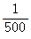
도면상 면적은 실제 면적의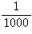
이다. - 축척
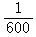
의 도면을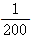
로 확대했을 때 도면의 면적은 3배가 된다. - 축척
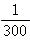
도면상 면적은 실제 면적의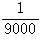
이다. - 축척
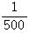
인 도면을 축척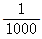
로 축소했을 때 도면의 면적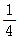
이 된다.
(정답률: 64%)
92. 다음 그림의 경심은?
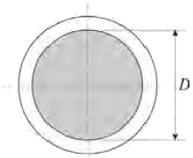
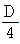
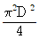
- πD
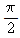
(정답률: 54%)
93. 다음 중 간접재료비에 포함되는 것은?
- 수목
- 시멘트
- 조명등
- 동바리
(정답률: 72%)
94. 일반 콘크리트 타설에 대한 설명으로 틀린 것은?
- 콘크리트의 타설 도중 블리딩에 의해 표면에 떠올라 있는 물은 제거한 후 타설하여야 한다.
- 타설한 콘크리트를 거푸집안에서 횡방향으로 이동시켜서는 안된다.
- 콘크리트를 2층 이상으로 나누어 타설할 경우 상층의 콘크리트 타설은 하층의 콘크리트가 굳은 후 실시하여야 한다.
- 한 구획 내의 콘크리트는 타설이 완료될 때 까지 연속해서 타설해야 한다.
(정답률: 52%)
95. 견치돌 사이에 모르타르를 다져 넣고, 뒷채움 돌에도 콘크리트를 채워 넣는 석축 시공법을 무엇이라 하는가?
- 건쌓기
- 메쌓기
- 찰쌓기
- 층지어쌓기
(정답률: 64%)
96. 그림과 같은 내민보에서 D점에 집중하중 P＝5t이 작용할 경우 C점에서의 휨모멘트 크기는?
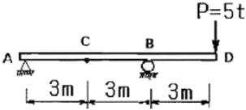
- 10tㆍm
- 7.5tㆍm
- 5tㆍm
- 2.5tㆍm
(정답률: 41%)
97. 벽면적 4.8m2 크기에 1.5B 두께로 붉은 벽돌을 쌓고자 할 때 벽돌 소요 매수로 옳은 것은? (단, 표준형 벽돌을 사용하고, 할증은 3%로 한다.)
- 374
- 743
- 1,108
- 1,487
(정답률: 65%)
98. 담장의 측지(側支)설계시 속도압이 196kg/cm2이고 1.0B가 되게 표준형 벽돌 담장을 쌓을 경우 최대허용거리와 담장의 폭의 비를 12로 한다면 최대 몇 m 마다 측지를 세워야 하는가?
- 1.6m
- 1.9m
- 2.2m
- 2.5m
(정답률: 46%)
99. 다음 중 벽돌쌓기에 관한 설명으로 틀린 것은?
- 벽돌구조는 수직압력에는 강하나 횡압력에는 약하다.
- 쌓기용 모르타르는 1 : 3의 조합이 보통이다.
- 일반적으로 1일의 쌓기는 2.0m 이내로 한다.
- 벽돌벽은 어느 부분이든 균일한 높이로 쌓아올라간다.
(정답률: 59%)
100. 자동차의 주행에 영향을 미치는 도로의 기하구조와 물리적 형상을 결정하는 기준이 되는 속도는?
- 주행속도
- 구간속도
- 운전속도
- 설계속도
(정답률: 74%)
6과목: 조경관리론
101. 녹병균 중에서 기주교대(寄住交代)는 다음 어느경우에 이루어지는가?
- 동종기생성
- 수종(數種)기생성
- 이종기생성
- 이주(異珠)기생성
(정답률: 53%)
102. 소나무 시들음병(재선충병)에 대한 설명이 아닌것은?
- 잣나무에서도 발병한다.
- 병원선충은 Belonolaimus sp.이다.
- 갑자기 침엽이 변색하며 나무 전체가 말라죽는다.
- 감염된 나무를 베어내어 훈증하는 것은 매개충을 구제하기 위한 것이다.
(정답률: 43%)
103. 전정작업의 목적과 관계가 먼 것은?
- 미관
- 실용
- 생리
- 법규
(정답률: 78%)
104. 계면활성제를 구성하는 원자단 중 친유성(親油性)이 가장 강한 것은?
- -CH2OR
- -COOH
- -OH
- -SO3H(Na)
(정답률: 45%)
1⑤. 다음 성질을 가지는 질소질 비료는?
- 요소
- 석회질소
- 황산암모늄
- 질산암모늄
(정답률: 49%)
106. 해충의 콜린에스테라제 효소활성을 저해시키는 약제는?
- 네오진액제
- 부라에스유제
- 다이아지논유제
- 석회보르도액
(정답률: 46%)
107. Gymnosporangium asiaticum이 향나무에서 배나무로 침입하는 포자 형태는?
- 녹포자
- 여름포자
- 겨울포자
- 담자포자
(정답률: 44%)
108. 레크레이션 수용능력의 결정인자는 고정인자와 가변인자로 구분되어 지는데 다음 중 고정적 결정인자가 아닌 것은?
- 특정활동에 대한 참여자의 반응정도
- 특정활동에 의한 이용의 영향에 대한 회복능력
- 특정활동에 필요한 사람의 수
- 특정활동에 필요한 공간의 최소면적
(정답률: 57%)
109. 공원에서 청소한 낙엽을 모아 소각 처리한 재가 잘못 묻어 어린이가 화상을 입었을 경우 어느 사고에 해당하는가?
- 관리하자
- 설치하자
- 이용자 부주의
- 보호자의 부주의
(정답률: 67%)
110. 소나무 시들음병을 일으키는 소나무재선충이 수목간을 이동하는 경로는?
- 바람
- 종자전염
- 매개충
- 토양전염
(정답률: 71%)
111. 열병합 발전소, 쓰레기 매립장, 폐기물 소각장 등 혐오시설물의 지역 내 설치에 대한 관계 당사자들의 견해와 관련된 용어는?
- 반달리즘(Vandalism)
- 님비(NIMBY)현상
- 수용능력(Carrying Capacity)
- 내셔널 트러스트(National Trust)
(정답률: 62%)
112. 동ㆍ식물원 관리계획에 관한 항목에 해당하지않는 것은?
- 자연지형의 이용 가능한 정도를 파악해야 한다.
- 생력화(省力化)를 위한 충분한 배려를 하여야한다.
- 배수시설과 하수로는 충분한 용량을 확보해야 한다.
- 기능적인 관리동선을 위해 충분한 너비로 하여 기계화를 가능하게 하여야 한다.
(정답률: 26%)
113. 다음 중 위탁관리의 장점이 아닌 것은?
- 관리주체가 보유해야할 담당 인원을 줄일 수 있다.
- 작업내용이 특수한 기술, 설비를 필요로 할 경우의 예산 절감 효과가 있다.
- 작업내용이 법령 등에 의해 의무화 되어 있을 경우 인력 축소가 가능하다.
- 관리주체의 취지가 잘 반영되고 관리책임이 명확해진다.
(정답률: 72%)
114. 합성수지 재료로 만든 조경공작물의 특성으로 옳은 것은?
- 마모나 훼손에 강하므로 내구성이 있다.
- 한 번 마모된 시설은 보수가 간편하다.
- 색깔이 아름다우므로 공장지대나 밝은 태양 아래 설치하면 좋다.
- 성형이 용이하고 규격화 할 수 있다.
(정답률: 61%)
115. 광장이나 녹지의 적절한 유지관리를 위한 배수시설에 대한 설명 중 부적합한 것은?
- 일반적으로 배수시설에는 표면에 노출하는 개거식과 지하에 매설하는 암거식 두 가지로 분류한다.
- 도로와 광장의 배수는 물매를 붙여 측구를 통해 맨홀에 모이게 한다.
- 콘크리트 측구는 L, V, 사다리꼴형 등을 적절하게 이용하게 한다.
- 지하수위가 높은 저습지는 배수시설이 필요하지 않다.
(정답률: 75%)
116. 우리나라 참나무류에 피해를 주고 있는 참나무시들음병에 대한 설명으로 잘못된 것은?
- 참나무류 중에서 신갈나무에 가장 피해가 심하다.
- 피해를 입은 나무는 7월 말경부터 빠르게 시들면서 빨갛게 말라죽는다.
- 매개충의 암컷 등에는 포자를 저장할 수 있는 균낭(mycangia)이 존재한다.
- 병원균은 Raffaelea sp이고 이것을 매개하는 매개충은 북방 수염하늘소이다.
(정답률: 58%)
117. 다음 중 유리나방과(科), 명나방과(科), 솔나방과(科)를 포함하는 목(目)은?
- Blattaria
- Hemiptera
- Plecoptera
- Lepidoptera
(정답률: 49%)
118. 식물의 광합성 양과 자체의 호흡량이 같아지는 때의 빛의 강도를 무엇이라 하는가?
- 최대 수광점
- 광보상점
- 광포화점
- 최저 수광점
(정답률: 70%)
119. 수목의 시비(施肥)에 대한 설명으로 옳지 않은 것은?
- 기비(밑거름)는 휴면기에 시비한다.
- 추비(덧거름)는 생육초반기(봄)에 주로 시비한다.
- 엽면시비는 건전한 생육을 위하여 자주 실시한다.
- 이식목의 활착, 동해회복에는 엽면시비가 효과적이다.
(정답률: 66%)
120. 관광지의 자원보호 차원에서 적정한 수용력에 합당한 이용규제가 절대적으로 요구되고 있다. 다음중 관광지의 이용규제방법으로서 적합하지 못한 것은?
- 예약된 손님 이외에는 입장시키지 않는다.
- 도시형 관광지일 경우 진입도로를 일방적으로 규제한다.
- 자가용차를 규제하고 버스만의 입장을 허용하여 관광객의 절대량을 감소시킨다.
- 관광지내의 편익시설, 특히 숙박시설을 일정수용력 이하로 제한하여 수용인원을 한정한다.
(정답률: 53%)